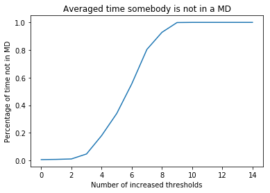

With a heavily connected network, it is nearly impossible for someone to not get depressed and also virtually impossible to get out of this depressed state without help.
This help can be given in different ways. A lot of treatments for Major Depression, like Cognitive-Behavioural Therapy (CBT), focus firstly on the symptoms of depression [1]. As example, CBT focusses on the symptoms to relieve the patients suffering to be better able to tackle the underlying problem [2]. We try to hypothesize which symptoms would be most helpful to focus on during the treatment. This is of course a general case, but could be a helpful start.
A way to test this, is to make the threshold of a symptom higher, since this effectively diminishes the influence it has on the other symptoms around it and so decreases the connectivity of the system. This makes it possible to get out of a depressed state.
To see which symptom or symptoms can best be treated, we simulated what happend when 1 till 14 parameters influences were diminished randomly. Parameters thresholds were randomly raised to 100. This was done 100 times for all parameters.
 General cases.The image shows us the average time spend not in a Major Depression with a number of symptom thresholds raised randomly. It shows the time not spend in a Major Depression in the simulation, since we can not be sure that somebody is suffering from one from our simulation. According to the DSM-V [3], somebody is suffering from a Major Depression when 5 of the 9 symptoms are manifesting itself for longer than two weeks. Since our simulation unfortunately do not have a time scale, we can never fulfil this condition, so we can not actually diagnose in the simulation.
When one symptom threshold is raised, you already see an increase in time spend in a not in a Major Depression. When even more thresholds are increased, this time increases even more. As more thresholds are increased the less connected the network becomes and when an average of 9 (out of 14) thresholds is increased, the network becomes so unconnected, that it never gets into a Major Depression.
Of course changes are slim, that a treatment will be able to include 9 symptoms, so the next step is to find out which are most important.
Specific cases.| Symptom number (DSM) | Symptom |
|---|---|
| 1 (1) | Depressed mood (dep) |
| 2 (2) | Loss of interest (int) |
| 3 (3) | Weight loss (los) |
| 4 (3) | Weight gain (gai) |
| 5 (3) | Decreased appetite (dap) |
| 6 (3) | Increased appetite (iap) |
| 7 (4) | Insomnia (iso) |
| 8 (4) | Hyposomnia (hso) |
| 9 (5) | Psychomotor agitation (agi) |
| 10 (5) | Psychomotor retardation (ret) |
| 11 (6) | Fatigue (fat) |
| 12 (7) | Feelings of worthlessness (wor) |
| 13 (8) | Concentration problems (con) |
| 14 (9) | Thoughts of death (dea) |
If you swipe/slide through the different graphs, on the x axis is specific symptom or combination of symptoms is shown. Interesting cases are highlighted (maybe). Especially symptom 1 (depressed mood) seems to be an important symptom to treat. You can play with this yourself below by raising the thresholds for some symptoms and so diminish their influence from the network.